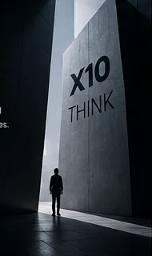

A software company built around thinking before building.
X10 Think creates digital products and technology solutions for businesses that want software to fit the way they work — not force the business around the software.
Small enough to stay close. Technical enough to go deep.
We work across product thinking, interface design and software engineering, from early problem definition through build, launch and iteration.
X10 Think is based in Jaffna, Sri Lanka, and is being developed as a technology company that combines client solutions with its own product work.

Think clearly. Build deliberately. Improve continuously.
How we want to work.
Business before technology
We try to understand what needs to change operationally before deciding what should be built.
Clarity over complexity
A smaller, well-designed system is often more useful than a technically impressive one that is hard to run.
Long-term foundations
Good architecture, maintainable code and understandable workflows matter after launch.
Design for real users
Interfaces should make the job easier, not simply look modern.
Evidence over assumptions
Where possible, product decisions should improve through feedback, usage and measurable outcomes.
Keep evolving
Products and businesses change. The system should be able to change with them.
Think → Design → Build → Launch → Evolve
The same core path can be compressed for a focused tool or expanded for a larger platform.
Think
Problem, users, success and constraints.
Design
Workflows, UX, system structure and scope.
Build
Engineering, integration and quality.
Launch
Deployment, validation and handover.
Evolve
Support, learning and iteration.
Looking for a product and engineering partner?
Tell us what the business needs to do better.